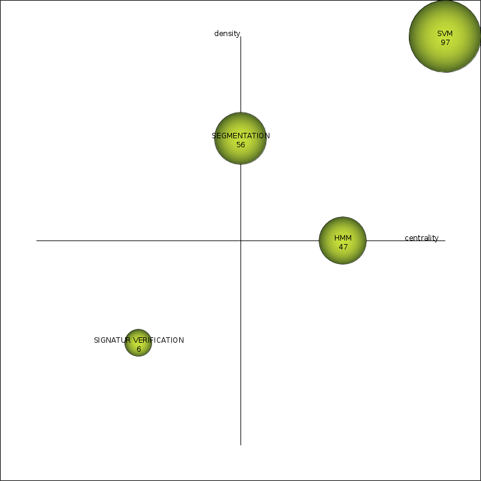
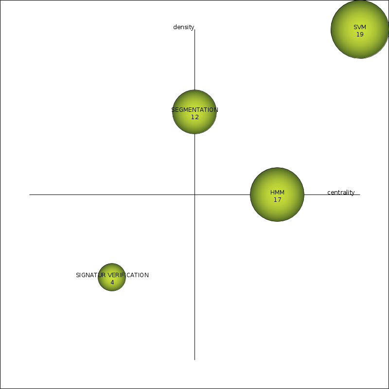
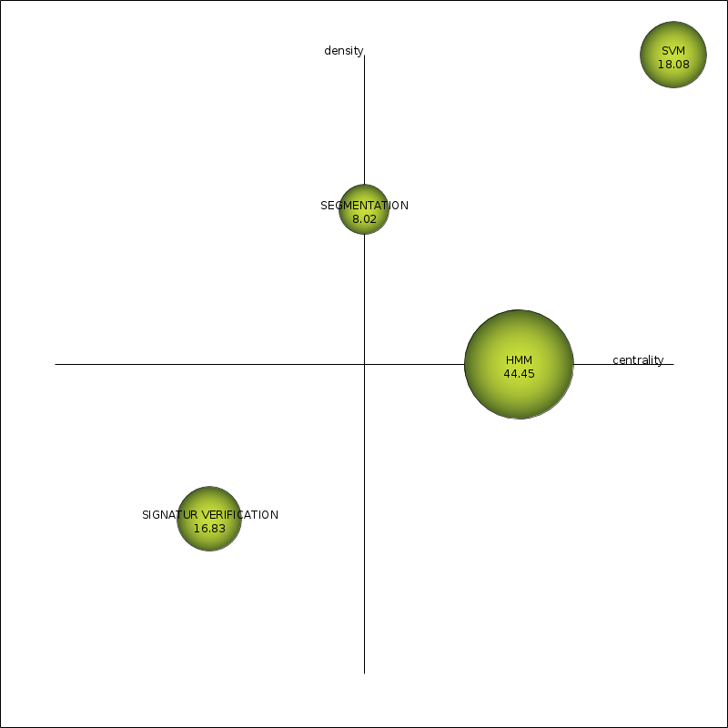
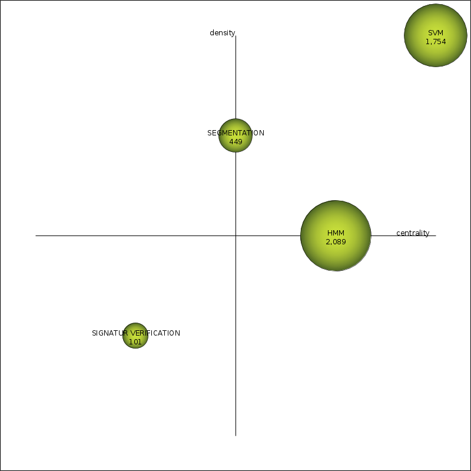
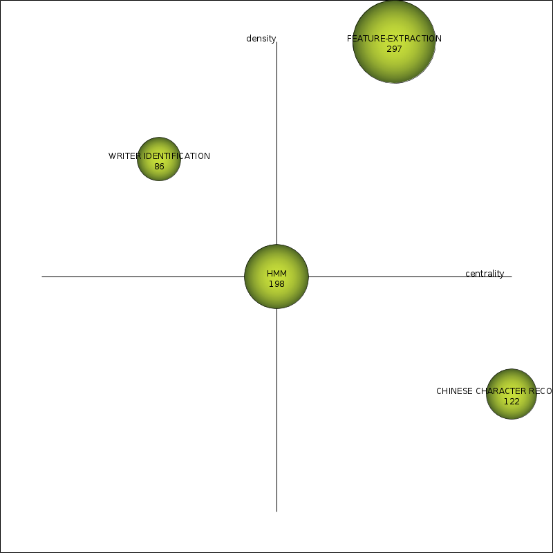
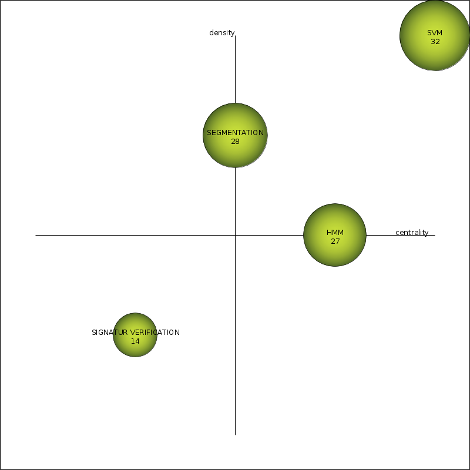
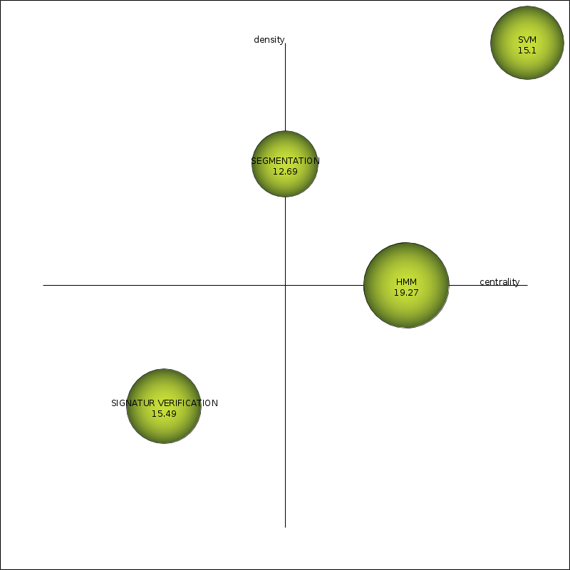
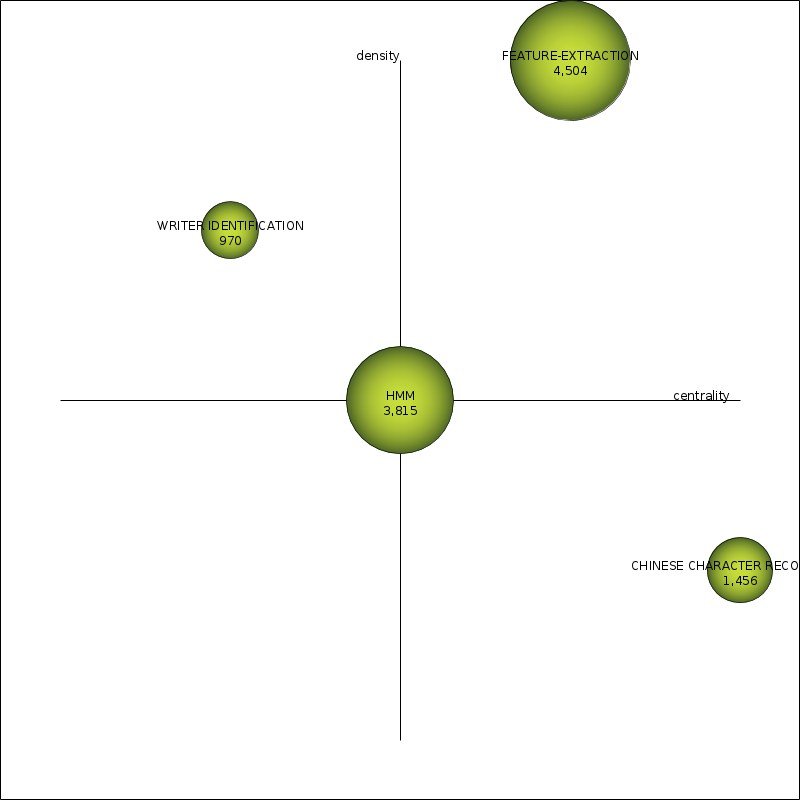
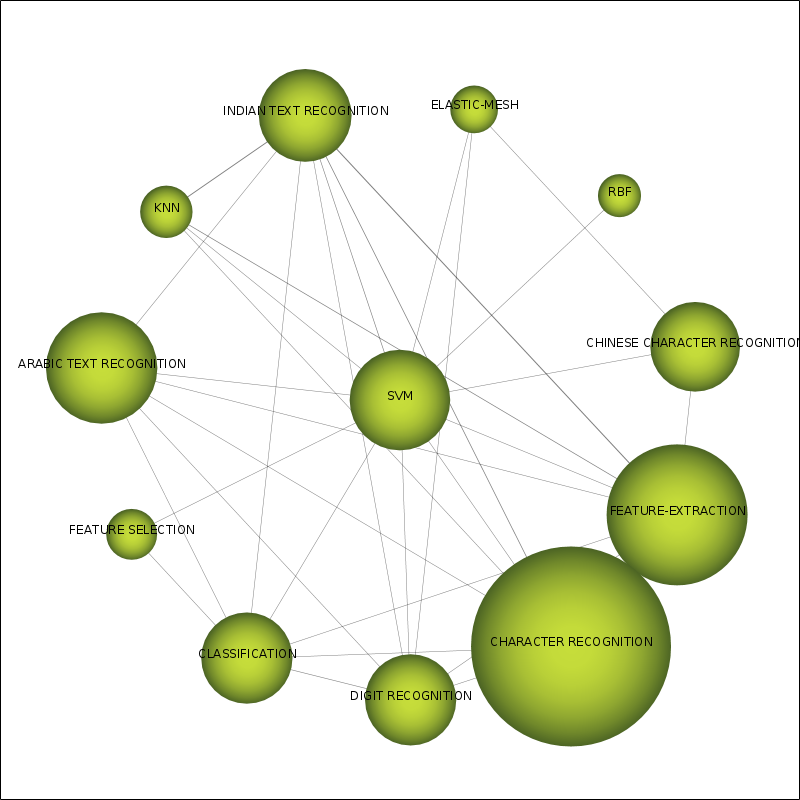
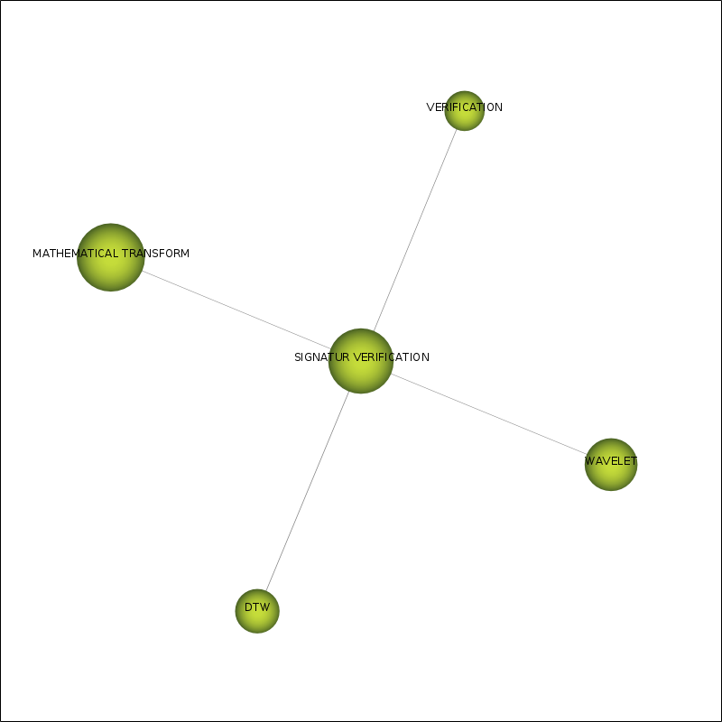

| Performance measure | Strategic diagram |
| coreDocuments-documentsCount |  |
| coreDocuments-hIndex |  |
| coreDocuments-averageCitations |  |
| coreDocuments-sumCitations |  |
| unionDocuments-documentsCount |  |
| unionDocuments-hIndex |  |
| unionDocuments-averageCitations |  |
| unionDocuments-sumCitations |  |
| Name | Centrality | Centrality range | Density | Density range |
| SVM | 21.4 | 1 | 9.39 | 1 |
| HMM | 12.35 | 0.75 | 4.41 | 0.5 |
| SEGMENTATION | 11.86 | 0.5 | 4.79 | 0.75 |
| SIGNATUR VERIFICATION | 6.51 | 0.25 | 3.18 | 0.25 |
| Name | coreDocumentsdocumentsCount | coreDocumentshIndex | coreDocumentsaverageCitations | coreDocumentssumCitations | unionDocumentsdocumentsCount | unionDocumentshIndex | unionDocumentsaverageCitations | unionDocumentssumCitations |
| SVM | 97 | 19 | 18.08 | 1,754 | 254 | 32 | 15.1 | 3,835 |
| HMM | 47 | 17 | 44.45 | 2,089 | 198 | 27 | 19.27 | 3,815 |
| SEGMENTATION | 56 | 12 | 8.02 | 449 | 206 | 28 | 12.69 | 2,614 |
| SIGNATUR VERIFICATION | 6 | 4 | 16.83 | 101 | 55 | 14 | 15.49 | 852 |
| Name | Cluster's network |
| SVM |  |
| HMM | |
| SEGMENTATION | |
| SIGNATUR VERIFICATION |  |